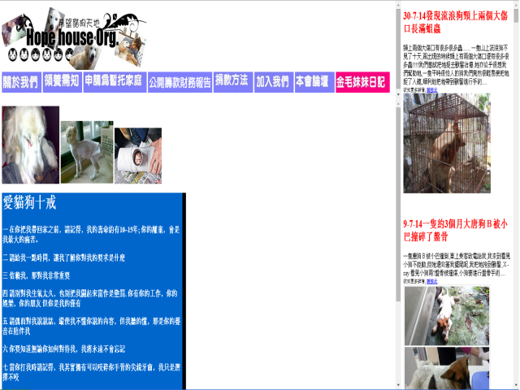

Hope House Organization
Aim & Mission
Hope House Organization was found by a group of volunteers who love animals. The organization aims at helping abandoned cats and dogs in the street, saving animals that was treated in a cruel manner, taking them to veterinary clinics for sterilization in order to control the number of stray, offering adoption services if they are gentle and harmless to human, promoting the message of loving animals.
Services & Activities
The services and activities provided:
- Cats & Dogs Adoption Day
- Foster Family for Cats & Dogs Service
- Home for the Aged Visit with Dogs
- District Charity Fair
- Protest against Threatened Rights of Animals
- Saving Animals Movement
- Others
Job & Volunteering
The organization provides only volunteering opportunities.
Volunteering
Volunteering work:
- Help promote through leaflet or email
- help feed stray
- help on tag day
- help design promotion posters or leaflets
- help take care of animals on outdoor adoption day
- join sterilization for stray and animal saving activities
Application method: Online Form
Contacts
- Shelter: 474, Ngau Tam Mei, Yuen Long, N.T.
- Mailing Address: Mail Box No. 144, Western District, Ngau Tam Mei, Yuen Long, N.T.
- Phone no.: 97850022
- Fax no.: 24500668
- Email: catdoghope@gmail.com
- Website: http://www.catdoghope.org/
Other Information
Donation Method
- By crossed cheque: Please specify "HOPE HOUSE ORGANIZATION" or "希望貓狗天地" for the name on the cheque.
- By direct transfer: Please deposit the donation to our Savings Account at Bank of China (HK) 012 610 101 54776.
Screen-shot:
back to top